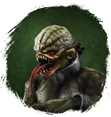
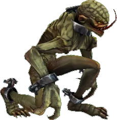

Открыть в интерактивной вики →

| Уровень | 75 |
|---|---|
| Прокачка | нет |
| Ранг в стае | 7 |
| Здоровье | 2000 |
| Мана | 1300 |
| Выносливость | 1500 |
| Статистика | Уровень: 75, ранг: 7, здоровье: 2000, мана: 1300, выносливость: 1500 |
Цена
15  Империал
Империал
ИмпериалГде взять
Покупается у Работорговца  Работорговец
Работорговец
РаботорговецНавыки


Доп. информация
Требуемый уровень: 75
Цена: 45 империалов
Покупка: у Работорговца
Может получать опыт — НЕТ
Описание
 | Мерзкое порождение магических экспериментов. Нападает внезапно, бьёт по уязвимым точкам и снижает точность атак и эффективность защиты противника. Атакует физически и издалека. Использует: Левой-правой, Фронт-кик, Контроль дыхания, Болезненный удар, Удар в печень, Летящее колено, Уклонения, Хадукен, Удар Ци, Рвота. | |